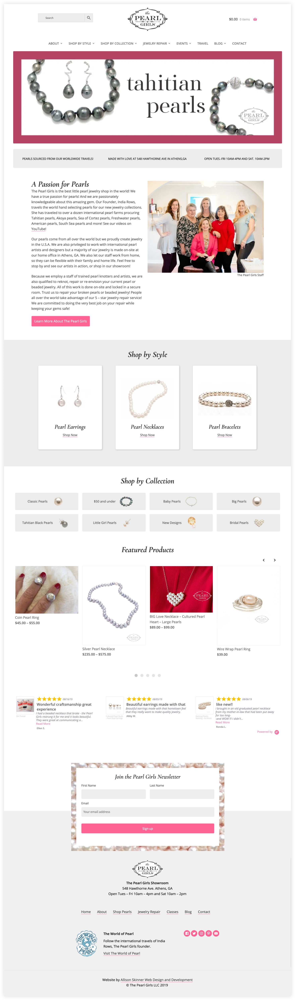
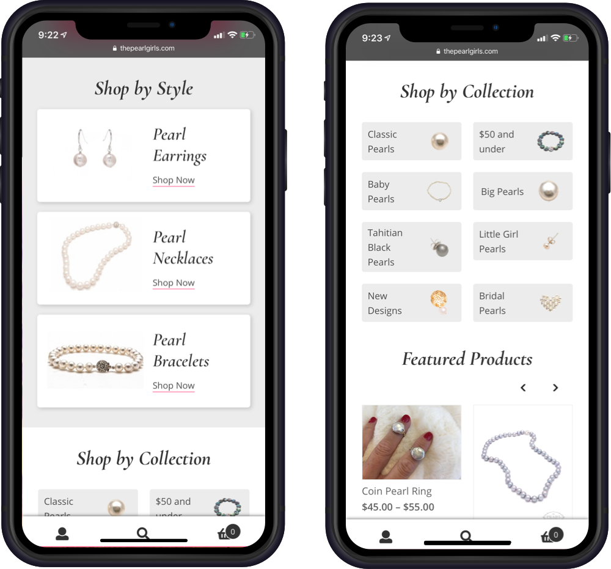
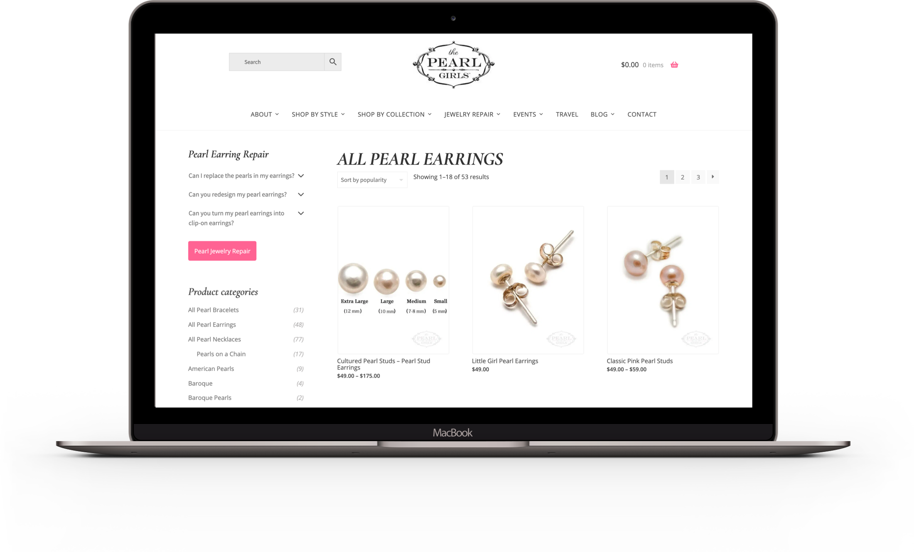
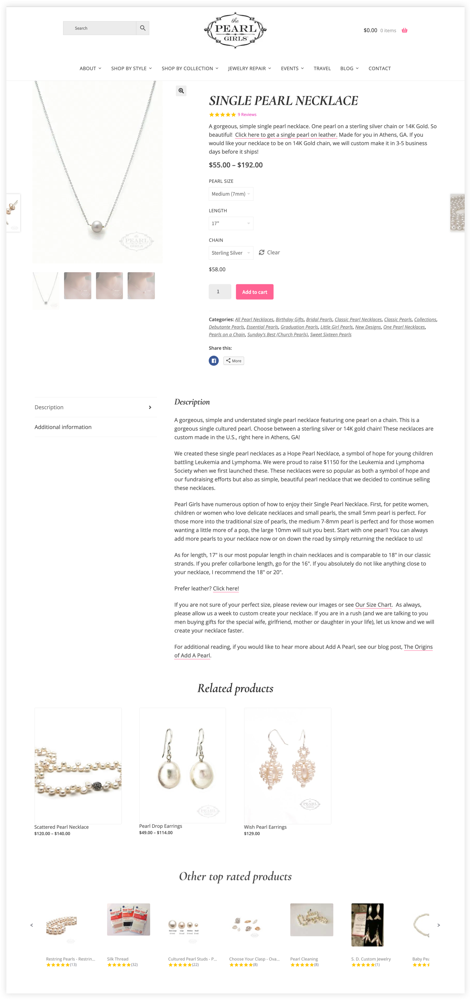
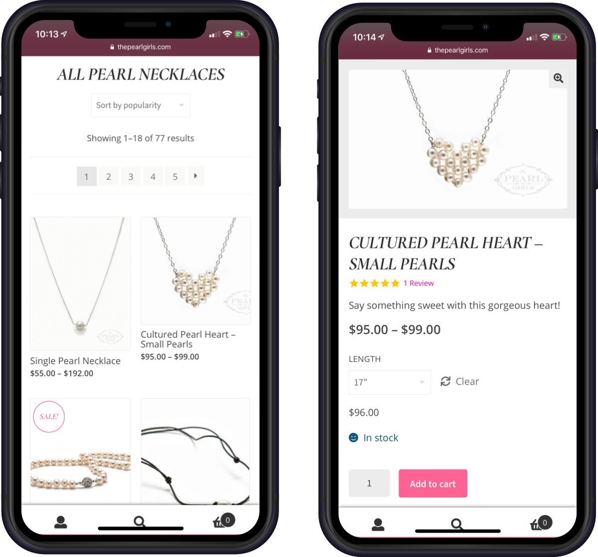
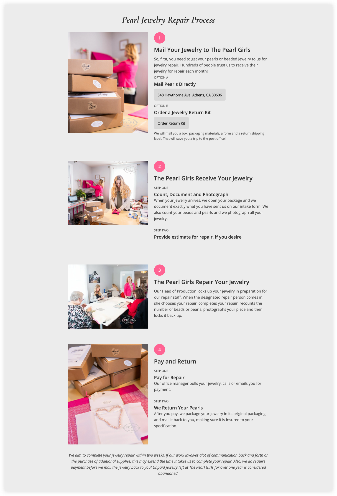
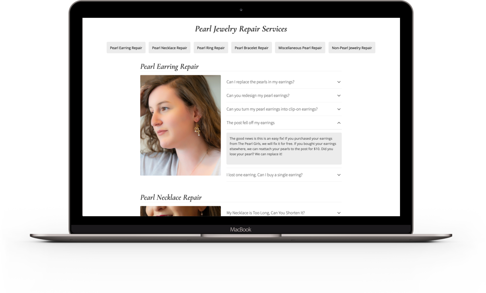
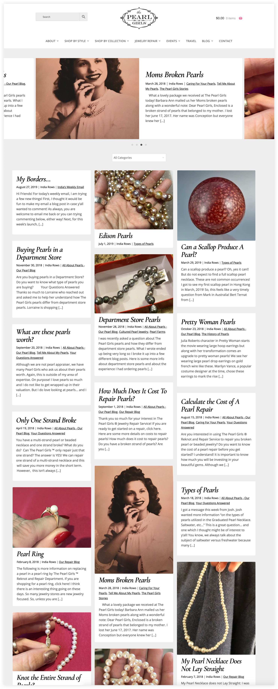
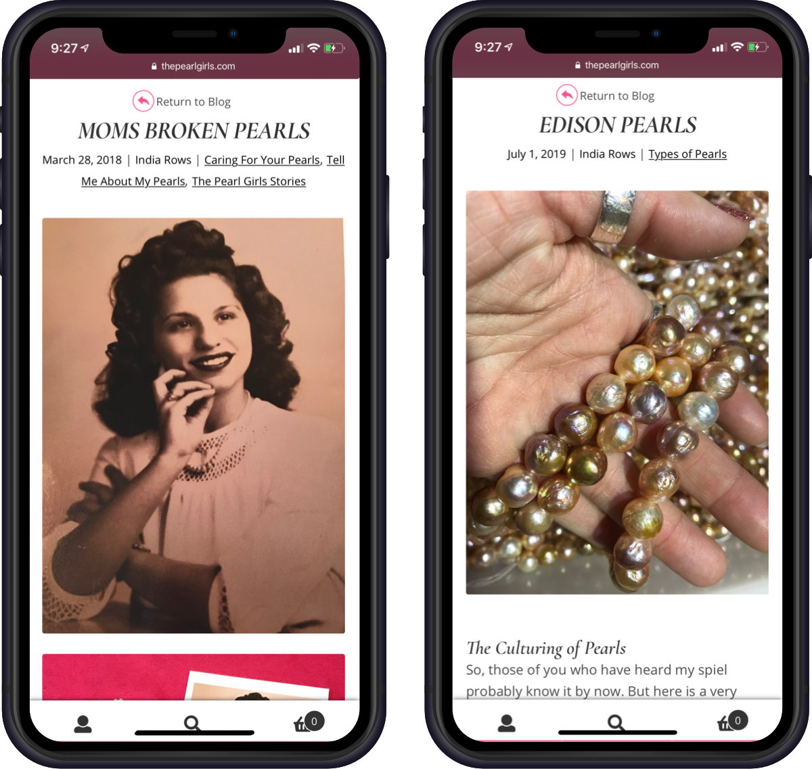

 
The Pearl Girls has a robust amount of pearl collections and styles. To guide the customer in his or her shopping experience, I added visuals to the pearl styles and collections. This provides a visual and interactive experience for the customer. The homepage also includes information on The Pearl Girls, their featured products and their highest rated products. Every page also includes a custom newsletter sign-up.

The product archives include a three column grid of products that can be sorted and filtered by customer preference. The product archives also include a sidebar that includes category specific repair FAQs and a full list of product categories.

The individual product pages include a lightbox gallery of product images, product specifications, product description, related products and product reviews.

Every element of the shopping experience at The Pearl Girls is mobile and tablet friendly.

One of the goals of the site redesign was to make the pearl jewelry repair process more simple and straight forward for customers. I achieved this by making a highly visual, easy-to-read and interactive explanation of The Pearl Girls jewelry repair process.

Another way we streamlined the pearl jewelry repair business was creating an archive of frequently asked questions. Pearl repair customers typically have similar questions and the easy to navigate and well categorized FAQs make it easy for their questions to be answered.

India Rows, founder of The Pearl Girls, has a robust pearl-focused blog on The Pearl Girls. The blog covers the pearl industry, pearl repairs, customer stories and shopping guides. India Rows is a well recognized pearl expert and her blog is a resource for pearl industry professionals and curious pearl customers. The blog archive includes a featured post slideshow and a masonry layout with infinite scroll.

The Pearl Girls blog is pleasurable reading experience on desktop and mobile. We achieved this by increasing font size, maintaining large visuals and including a return link to the main blog page.